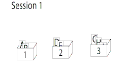

Leitner System
MEMORIZING STUDYThe Leitner System is a learning technique based on flashcards.

The Leitner system is a widely used method of efficiently using flashcards that was proposed by the German science journalist Sebastian Leitner in the 1970s. It is a simple implementation of the principle of spaced repetition, where cards are reviewed at increasing intervals.
Method
In this method, flashcards are sorted into groups according to how
well the learner knows each one in Leitner's learning box. The
learners try to recall the solution written on a flashcard. If they
succeed, they send the card to the next group. If they fail, they send
it back to the first group. Each succeeding group has a longer period
before the learner is required to revisit the cards. In Leitner's
original method, published in his book So lernt man Lernen (How to
learn to learn), the schedule of repetition was governed by the size
of the partitions in the learning box. These were 1, 2, 5, 8, and
14cm. Only when a partition became full was the learner to review some
of the cards it contained, moving them forward or back depending on
whether they remembered them.
Examples
Three boxes
Suppose there are 3 boxes of cards called "Box 1", "Box 2" and "Box
3". The cards in Box 1 are the ones that the learner often makes
mistakes with, and Box 3 contains the cards that they know very well.
They might choose to study the Box 1 cards once a day, Box 2 every 3
days, and Box 3 cards every 5 days. If they look at a card in Box 1
and get the correct answer, they "promote" it to Box 2. A correct
answer with a card in Box 2 "promotes" that card to Box 3. If they
make a mistake with a card in Box 2 or Box 3, it gets "demoted" to the
first box, which forces the learner to study that card more often. The
advantage of this method is that the learner can focus on the most
difficult flashcards, which remain in the first few groups. The result
is, ideally, a reduction in the amount of study time needed.

Proficiency levels
With this method, there are 12 boxes. One is the Current Deck, one is the Retired Deck, and the remaining 10 boxes are named with these numbers:
- 0-2-5-9
- 1-3-6-0
- 2-4-7-1
- 3-5-8-2
- 4-6-9-3
- 5-7-0-4
- 6-8-1-5
- 7-9-2-6
- 8-0-3-7
- 9-1-4-8
Learning sessions are numbered from 0 to 9, then the numbering starts over again (i.e. 0, 1, 2, ..., 8, 9, 0, 1,
2, ...).
All cards begin in Deck Current. All cards in Deck Current are done at every learning session.
If a learner is successful at a card from Deck Current, it gets transferred to the deck that begins with that
session's number. For example, if this is session 0, a successful card in Deck Current moves to box 0-2-5-9; If
this is session 3, a successful card from Deck Current moves to box 3-5-8-2.
A box of cards is reviewed when its name contains the current session number. For example, if this is session 0, boxes 0-2-5-9, 1-3-6-0, 5-7-0-4, and 8-0-3-7 are done because they all contain the number 0. If a reviewed card isn't successful, it moves back to Deck Current.
If a reviewed card is successful and the last number of its box matches the current session number, then that card moves to the Retired Deck. For example, if this is session 9 and you're reviewing box 0-2-5-9, then any successful cards from this box will move to the Retired Deck.
If a reviewed card is successful and the last number of its box doesn't match the current session number, then that card stays where it is. The effect is identical to a 5-box Leitner system, however, whereas in that system each box represents the proficiency level of its contents, here each box represents the session in which it is done.
Automation
Ideas similar to these have been implemented into a number of computer-assisted language learning and flashcard software. Much of this software makes use of so-called "electronic flashcards".
You can buy the template of this method from here